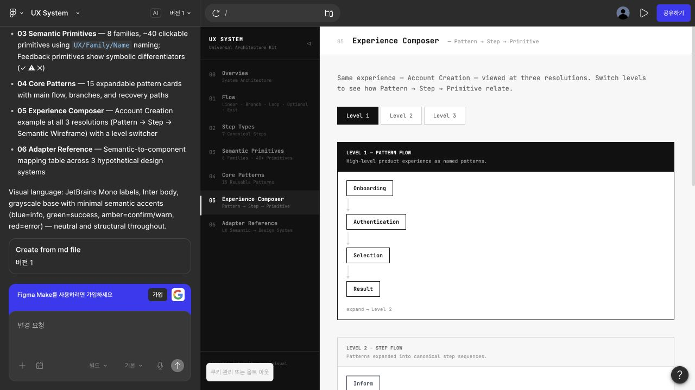
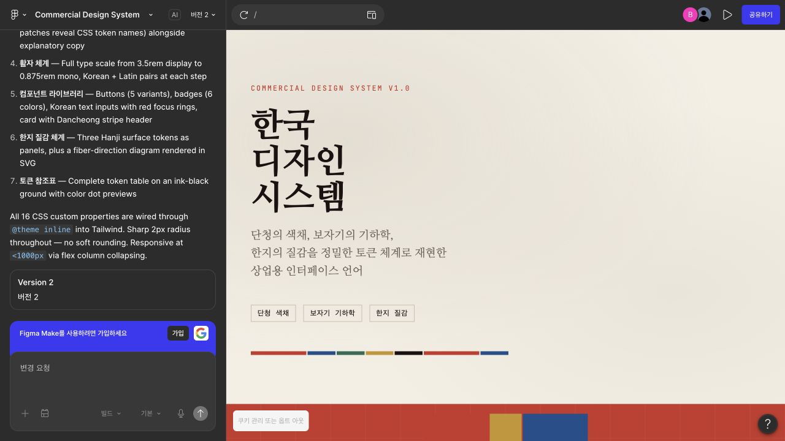
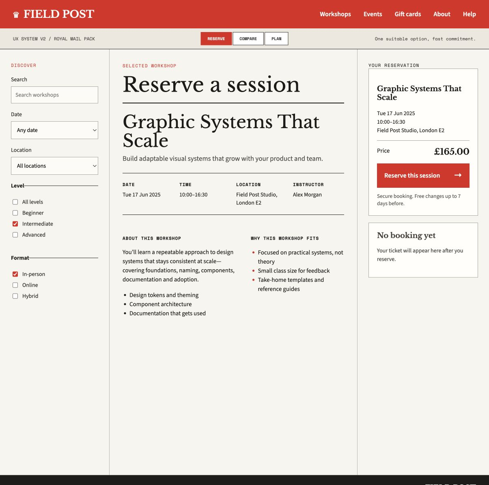
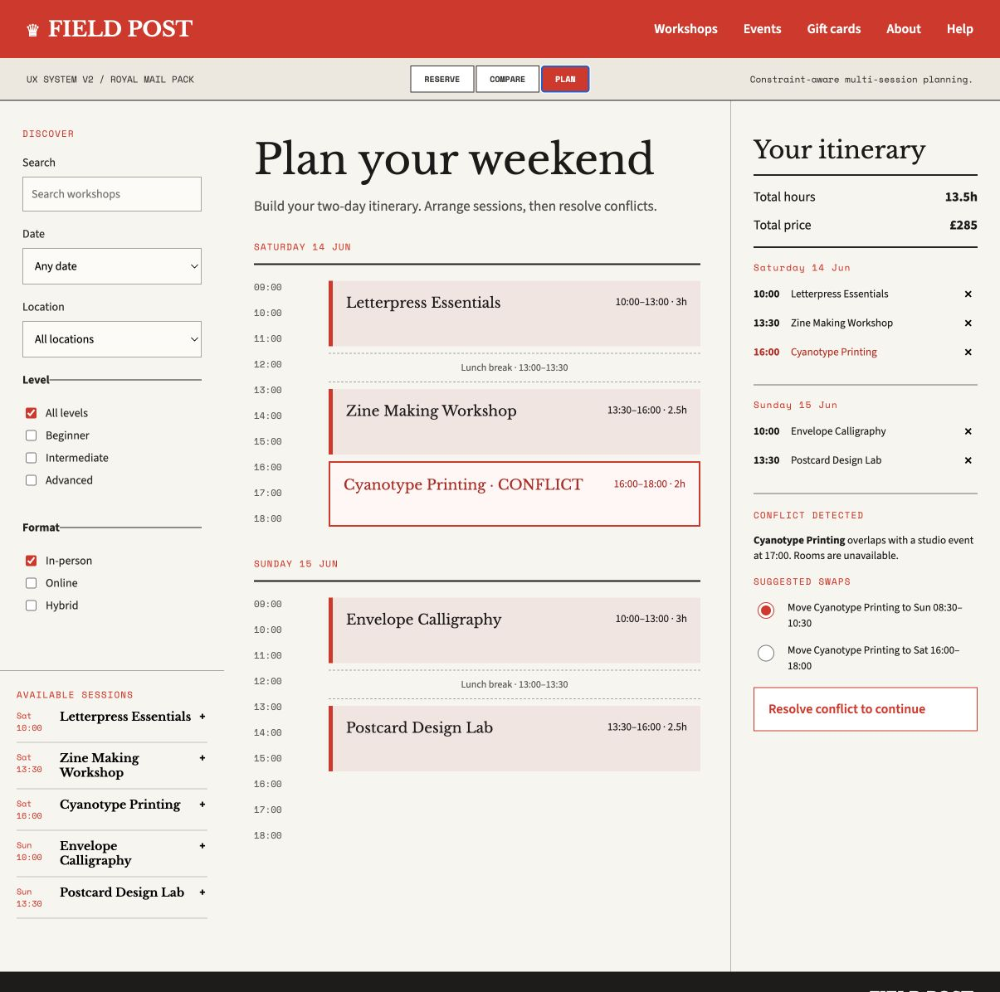

먼저 넓게 만들었다.
제품·매장·캠페인·머천다이즈까지 확장했다. 시각적 재사용성은 보였지만, 브랜드가 누구에게 왜 필요한지는 얕았다.

C5 / 2026.08.04—08.26
C5는 앱을 완성하기 위한 디자인 실험이 아니라, 조합 가능한 AI UX/UI 시스템이 실제 경험을 보존할 수 있는지 묻는 실험에서 출발했다. 실패와 제약을 지나, 재사용 가능한 계약을 찾기 시작했다.
연대기 시작 “같은 UX를 다른 디자인으로 바꾸면, 정말 같은 경험이 남을까?”08.04 — 08.09 / PLAN
00 — 앱 이전
초기 목표는 최소 온보딩·직관 UI·확장 가능한 AI 디자인 시스템이었다. 랜덤 비트 메이커는 그 조합이 앱·웹·책 같은 다른 형태에도 적용되는지 확인할 대표 실험물이었다.
AI가 이해할 수 있는 UX/UI 레퍼런스를 어떻게 주고 문서화할까?
하나의 시스템은 어디까지 범용적일 수 있고, 무엇을 조합해야 할까?
결과를 A/B 테스트와 피드백으로 다시 평가할 수 있을까?
실패는 예외가 아니라, 처음부터 계획된 학습의 일부였다.
08.10 — 08.12 / FIRST COLLAPSE
01 — 조합의 발견
기존 디자인 시스템을 검토하고 정량 평가했지만, 새 시스템을 만든다고 개선이 자동으로 따라오지는 않았다. 결론은 단일 시스템이 아니라 캐릭터 팩과 UX/UI 시스템을 조합하는 편이 낫다는 것이었다.
시스템 설계는 머리가 아프지만 필연적이었다. 그리고 8월 12일의 기록은 한 단어로 끝난다: 실패.
08.13 — 08.14 / CONSTRAINT
02 — 토큰 0
첫 번째 플러그인 실험은 실패했고, 예상보다 느린 테스트와 토큰 0이 겹쳤다. 대신 작업은 문서 읽기, HIG·UX 리서치, HTML을 Figma로 옮길 수 있는지 조사하는 방향으로 바뀌었다.
생성량이 아니라, 남은 근거를 읽고 다음 질문을 준비하는 것도 시스템 작업이다.


08.18 / GAME UX FLOW
03 — 문서로 좁히기
범용 시스템을 말하는 데서 멈추지 않고, 기존 게임의 개선된 디자인을 만들기 위한 UX 흐름 문서로 질문을 좁혔다. 게임의 맥락, 결정 기준, 다음 작업을 문서로 정리한 뒤 Figma Make를 시험대에 올렸다.
제품 제작 전에 고정할 것: 사용자 맥락, 상태, 성공 기준, 실패 비용.


08.19 — 08.21 / FIGMA MAKE FIELD TRIAL
04 — 시험대
레퍼런스와 디자인 시스템을 연결하고 A/B 테스트를 시도했다. Overview, Experience Composer, Adapter Reference, Commercial Design System은 강한 출발점을 보여 줬지만, 질문은 곧 “만들 수 있는가?”에서 “UX 시스템으로 실제 작동하는가?”로 바뀌었다.
화면 하나가 Context, Preset 선택, Runtime까지 증명하지는 않는다.


08.20 / FIRST CONTRADICTION
03 — 첫 반증
USPS·Apple·Royal Mail을 같은 실험에 적용했지만, grid·header·정보 밀도·컴포넌트 해부는 그대로였다. 결과는 같은 UI에 다른 테마를 입힌 데모였다.
Design Pack은 팔레트가 아니라 정보 구조와 표현 문법을 바꿔야 한다.

08.21 / GOAL PROFILES
04 — 프리셋의 재정의
Industrial Swiss 실험에서 Reserve·Compare·Plan은 CTA와 문구만 조금 달라졌고, Compare 선택은 필터 뒤에 숨었다. 이후 프리셋은 선택·검증·커밋·결과·복구를 바꾸는 구조 계약으로 다시 정의됐다.
글자만 달라진 profile은 다른 UX가 아니다.

08.21 — 08.24 / RECOVERY
05 — 작은 성공
Royal Mail 재시도에서 Reserve는 상세/커밋, Compare는 비교표/선택, Plan은 타임라인/충돌 해결로 실제 다른 정보 구조를 얻었다. 동시에 추천·선택·결과가 함께 갱신돼야 한다는 더 엄격한 조건도 드러났다.
구조 변화만으로는 부족하다. 모든 표면은 같은 상태 모델에서 진실하게 갱신되어야 한다.



08.24 / MARKDOWN-FIRST
06 — Rasterline
플러그인 실패 뒤 문서·리서치로 돌아간 작업은, 이제 문서를 늘리는 대신 정본을 고정하는 방법으로 바뀌었다. Figma Make의 디더링 기반 Pack은 Rasterline System으로 다시 이름 붙었고, 관찰된 토큰·컴포넌트·패턴은 Markdown에 정리했다.
Figma는 관찰/편집의 원본, Markdown은 계약, HTML은 표현 검증이다.

08.25 — 08.26 / TAKE 01 · COMMON SURFACE
06A — 병렬 검증
랜덤 음악 앱과 병렬로, COMMON SURFACE라는 가상 브랜드에 Design Pack과 UX Preset을 적용했다. 질문은 화면이 많이 만들어지는가가 아니라, 브랜드를 일관되게 표현하고 변경·확장·검증까지 감당할 수 있는가였다.
에셋은 맥락을 대체하지 않는다.

제품·매장·캠페인·머천다이즈까지 확장했다. 시각적 재사용성은 보였지만, 브랜드가 누구에게 왜 필요한지는 얕았다.
로고·제품·인물·응용 매체를 크게 늘렸다. 결과는 풍부해졌지만, 제품 정보와 고객 맥락의 빈칸까지 메우지는 못했다.

7개 매체 변경 전파를 시험하며 Binding·권한·rollback·증거 관리의 결함이 드러났다. P0/P1은 0이었지만 종합 판정은 REVISE였다.

디자인팩·로고·제품·토큰은 고정하고 고객 상황 하나만 바꿨다. 내부 1차 평가에서 브랜드·메시지·제품 연결성이 올랐다.

카드를 열어 실패가 어떤 계약으로 회수됐는지 확인한다. 이 전환은 장식이 아니라 C5의 실제 작업 방식이다.
같은 랜덤 음악 앱을 클릭해 보세요. 각 층은 자신의 일을 하고, 아래 층의 결정을 몰래 바꾸지 않습니다.
01 / PRODUCT BINDING
행사 진행자와 취미 청취자, 댄스/랩 선택, 한 후보를 고르고 명시적으로 재생, 다시 뽑기로 복구한다는 제품 사실과 가정을 담는다.
Design Pack의 색이나 Preset의 레이아웃 취향을 결정하지 않는다.
08.26 / TAKE 2
07 — 다시 제품으로
Product Binding → Reserve preset → Rasterline → Flowchart → Low-fi → High-fi를 따라 최소 랜덤 음악 앱을 투영했다. 이 전개는 8월 24일의 가능성, 25일의 의심, 26일의 첫걸음 위에 놓여 있다. 인터랙티브 HTML과 traceability는 확보했지만, 실제 오디오·권리·보조기술·사람의 이해는 아직 열려 있다.
잠정적 가치는 증명됐다. 제품의 가치는 아직 증명하지 않았다.


이번에 모은 화면은 C5가 무엇을 ‘만들었는지’보다, 무엇을 서로 비교하고 어떤 주장으로 제한해야 하는지를 더 또렷하게 보여 준다.
편집 가능한 시각 언어와 레퍼런스의 폭. 관찰된 원본이지, 제품 런타임의 증거는 아니다.
중복 캡처를 대표 화면으로 정리한 뒤 남은 HTML 결과물. 렌더된 산출물이지만, 모두가 같은 UX 계약을 증명하는 것은 아니다.
중복 대표 이미지만 남긴 고유 시각 자료군. 원본 파일 329개는 보존하고, 화면에서는 같은 이미지를 반복하지 않는다.
각 이미지를 클릭하면 원본을 크게 볼 수 있다. 모든 자산은 실제 C5 폴더에 있는 파일이며, 이미지가 보여주는 범위만 주장한다.
08 — CURRENT VERDICT
시각적인 개성과 UX의 의미를 구분하고, 실패와 미검증 상태까지 다음 실험의 입력으로 남길 수 있는 작업 방식이다.